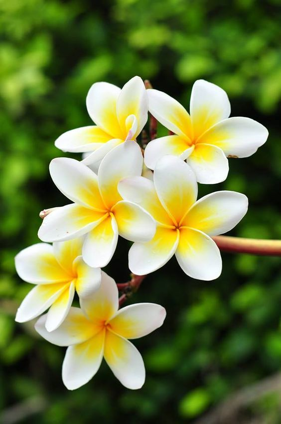

La Plumeria rubra, también llamada jazmín magno, frangipani, franchipán, cacalosúchil, flor de mayo o alhelí entre otros, es un popular arbusto tropical que tiene su origen en México y Centroamérica. Las plumerias son todo un género con 7 especies, entre las que las más conocidas son la Plumeria alba, la Plumeria obtusa, la Plumeria púdica y la Plumeria rubra, esta última la más popular en todo el mundo. La rubra se distingue de las demás plumerias no solo por la gran belleza de sus flores, que pueden ser blancas o rosas, sino por el embriagador aroma que estas desprenden desde que brotan en primavera. El arbusto puede llegar a alcanzar alturas de hasta 9 metros, pero cuando se cultiva en jardín lo más habitual es que se quede, como mucho, en la mitad de esta altura. Las hojas son caducas, por lo que la planta las pierde cuando empieza el frío entre el otoño y el invierno.
Volver a la página principal